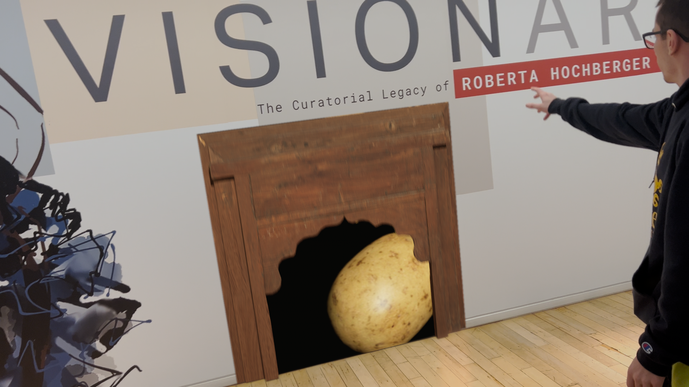

For mycompositing 2 class we were required create a final composite that involved doing some sort of trackin. We could do Object tracking or 3d track a scene both we would ultimately composite 3D elements into a shot we recorded.
For my project I decided that I would have a super power and be able to open a door to a potato realm. Thisidea was because the group I was a part of although we were not working together on the shots we wanted to have a theme which was potato themed powers.

I used syntheyes to track the footage as well as export the track to maya. I did a little bit of cleaning up on the track to make sure it was good then exported some placeholder geamoetry and the camera separtately into one unreal project where I did the final rendering for the composite.
The final clean composite of combining the renders from unreal with the plates recorded was all done using Nuke. I reandered many different passes to get subtle detail like reflections and get just the right final look for the shot for everything to match.